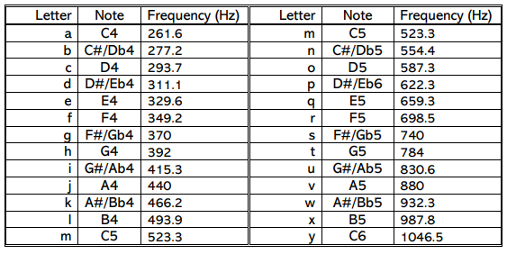
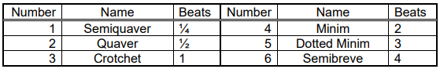
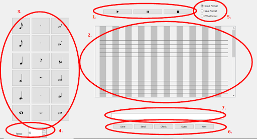
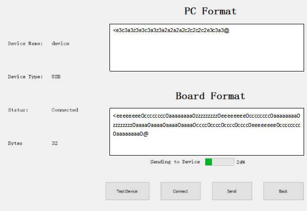

In this project, a music player was created that can receive music files from a PC, then play the music back. The tempo should be able to be controlled via a non-trivial controller. A software program which allows the creation of the music files was also created. The project completed all goals on time, and on budget.
Language
- Software: C++(Qt)
- Hardware: VHDL
Hardware Design
Ultrasonic Sensor
The ultrasonic sensor is a simple HC-SR04 connected to the FX-2 IO pins of the FPGA for input/output. The sensor draws 5V from the VV rail of the FX-2 expansion board and is grounded in a similar manner. Since this is an off-the-shelf component, it does not require any additional circuitry to function, and the distance sensing and calculation is handled in the VHDL module.
Wave Generator
The wave generator is implemented based on the Digital-Analog Converter(DAC) circuit plus a voltage follower. Compared with the integrator circuit method in the initial design, the DAC seems to be a better option because it is stable and easy to be built. However, due to the low voltage and the accuracy of the resistors, the DAC only supports 4 bits which causes low sample rate and affect the purity. The FPGA sends 4 bits into the circuit and the DAC generates voltages with different levels according to the number. Finally, the speaker receives the voltage and makes the sound.
Frequency and Tempo Generation
Since there are a limited number of notes the music player needs to produce, the number of 50MHz clock ticks required to produce a square wave of the desired frequency was calculated for each note. These values are stored in a LUT which is then checked every time a new note is read in from RAM.
Tempo generation is a much more complex affair. Since the player is capable of generating any tempo from 60 to 120 (in integer steps), it is much less desirable to write a 60 entry LUT. However, the division functions implemented by standard VHDL libraries such as numeric_std are not capable of integer/variable division. Hence an additional module was written, which takes the input from either the sensor or RAM, and performs manual division through repeated subtraction, and outputs a quotient representing the number of 50MHz clock ticks for each beat. The actual mathematical operations performed are (50 000 000/16*60)/TEMPO.
FPGA Software Interface
In order to build the communication between the software and hardware, the Enhanced Parallel Protocol was used to send and receive the file data. This protocol is used for the parallel port: the USB connection. The PC sends chunks of 8 bits in a loop to the FPGA until the file is totally read. The data received by FPGA is directly sent to the memory and the device will read until the ready signal rises.
On the software side, unlike the initial design, the DMGR and DEPP libraries were used to implement the protocol initialization and file transferring so that the software is able to detect the connection of the device and the PC, and user does not need to manually config the device table.
There are two main functions that are used to initialize the enumeration, which are DmgrEnumDevices() and DmgrGetDvc(), which are performing the enumeration of the device in the system and get the device information. Furthermore, DeppEnable() is used to open the port, DeppPutReg() to write a single dat and DeppClose() to close the port. In addition, the software uses the DmgrOpen() function that attempts to open the device each second in order to check that the device is open (by inspecting its return value).
However, the FPGA does need to care about the detailed value of the timing and uses the state machine to dynamically detects the rising edge of the data and address strobe. Fortunately, the dpimref.vhdl provides the simple code to receive the data, and in this project, register 0 was used to carry the data. The memory grabs data from the EPP interface and stores it from the address 0 to 128. Therefore, the memory supports 129 characters, which is sufficient for a simple song.
Software Design
Notes


Introduction
The software performs six main tasks: sending data to the board, creating the data, checking the data is correct, opening data from and saving the data to the computer, translating it from one data representation form to another, playing a preview of the song.
The main views of the software are given in figures 7 and 8. The circled components numbered 1 in figure 7, allow playback of the song, components 2 is a display that changes between a stave and a text box, depending on the radio button selected in components 5. When it is in stave mode, the user can click on the notations in components 3 and place them on the stave, as well as changing the tempo using component 4. When the user checks the data or tries to save the data or move from one format to another and there is an issue, component 7 displays an error message such as “Missing ‘@’ from the end of the string”. Figure 8 displays the window that appears to send the data to the board, it includes the PC format, the board format, progress and various options such as testing the device is connected.

